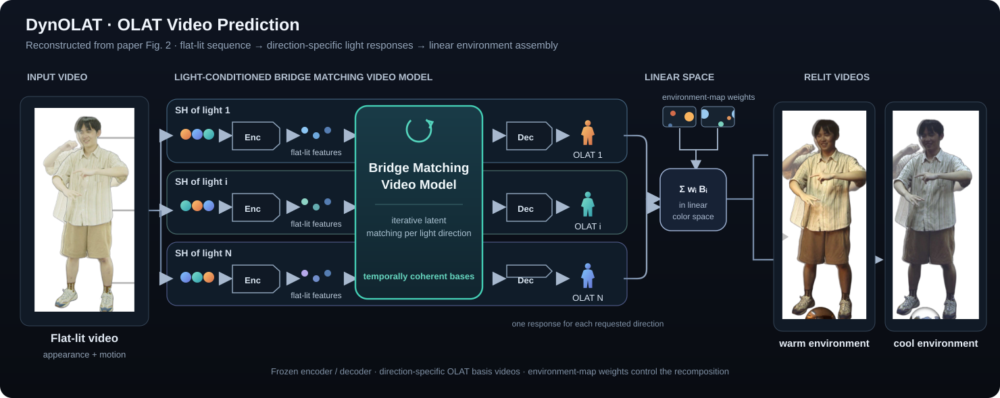

Capture Setup
A LightStage with 101 addressable light units. The dynamic and static subsets use 68 and 70 synchronized cameras, respectively.
Zhejiang University 4DV.ai Relighting Project
One video. Explicit light directions. Controllable relighting.
Short relighting previews under different environment maps. SDR playback.
DynOLAT relights full-body human performances from monocular video. For general videos captured under uncontrolled illumination, a lightweight delighting model first reduces the existing lighting and maps the input toward the flat-lit training domain. The OLAT predictor then generates temporally consistent One-Light-At-a-Time basis videos. Instead of directly generating a single relit appearance, it makes light direction explicit in the predicted bases and controls relative lighting intensity through linear combinations derived from an environment map. A dynamic capture pipeline provides over 24 million frames from 224 identity-outfit combinations. Experiments evaluate lighting response, fine appearance detail, and temporal coherence under novel illumination.
From general video to controllable light: a delighting stage bridges uncontrolled input illumination to the flat-lit domain. Our light-conditioned video model predicts a reusable set of OLAT basis videos, which can be recombined under new environment maps.

A lightweight LoRA adaptation of Wan2.1 1.3B reduces uncontrolled illumination before OLAT prediction. This extends the system beyond directly captured flat-lit inputs; the internal OLAT predictor still uses the flat-lit domain.
Bridge matching transports flat-lit source latents toward OLAT target latents, reducing distribution mismatch while preserving temporal structure and identity details.
Lighting directions modulate the video model via AdaLN, producing temporally coherent OLAT basis videos that remain stable under dynamic body motion.
Predicted OLAT basis frames are accumulated in linear color space with illumination weights, yielding controllable full-body relighting under arbitrary environment maps.
Gated access: sign in to Hugging Face and accept the dataset’s conditions, including sharing your contact information.
24M+captured frames
224identity-outfit combinations
4Kmulti-view capture
A LightStage with 101 addressable light units. The dynamic and static subsets use 68 and 70 synchronized cameras, respectively.
189 dynamic and 35 static identity-outfit combinations, spanning varied clothing, motion, and viewpoints. Different outfits of one person count separately.
Time-multiplexed flat-lit and OLAT frames are aligned using optical flow to form paired supervision for learning light responses.
Explore lighting response, captured test scenes, in-the-wild inputs, and temporal consistency. All clips are excerpts from the supplementary video, with the original method labels preserved.
DynOLAT improves lighting-response fidelity across most reported image metrics and achieves the lowest errors in the reported temporal comparison. Results below reproduce Tables 2 and 3 of the paper.
| Method | PSNR ↑ | SSIM ↑ | LPIPS ↓ | FLIP ↓ |
|---|---|---|---|---|
| IC-Light | 19.51 | 0.8760 | 0.1322 | 0.1226 |
| LBM | 23.08 | 0.9185 | 0.1002 | 0.0874 |
| UniRelight | 22.91 | 0.9070 | 0.0928 | 0.0889 |
| DiffusionRenderer | 23.11 | 0.9057 | 0.0900 | 0.0841 |
| DynOLAT | 26.23 | 0.9169 | 0.0567 | 0.0602 |
| Method | Temporal LPIPS ↓ | WE (RAFT) ↓ | WE (AllTracker) ↓ |
|---|---|---|---|
| RelightVid | 0.02763 | 0.00107 | 0.00112 |
| UniRelight | 0.02660 | 0.00079 | 0.00082 |
| DiffusionRenderer | 0.02629 | 0.00078 | 0.00080 |
| DynOLAT | 0.02532 | 0.00065 | 0.00060 |
Bold marks the best value in each column. ↑ Higher is better; ↓ lower is better. See §5.3 and Tables 2–3 for evaluation settings.
Two encodings of a relighting example. This illustrates display formats, rather than a comparison between methods.
HDR Playback: Detecting support...
The full system supports general video through delighting, while the OLAT predictor is trained in the flat-lit domain. Strong cast shadows and colored illumination can still leave residual lighting after delighting. Fine details are limited by the pretrained video VAE, and generating and storing many OLAT bases adds cost. Cross-OLAT and cross-view consistency is not explicitly guaranteed. See the supplementary analysis for failure cases.